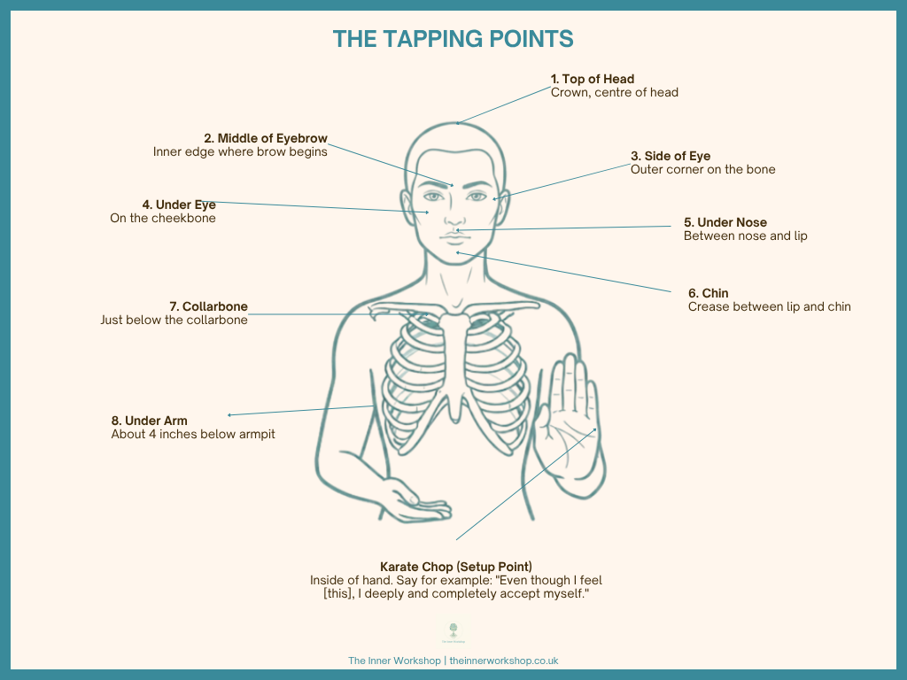

A practical guide to EFT — evidence-based tools to reduce stress in the classroom and beyond. Knowledge drawn from Dr Peta Stapleton's clinical EFT research and the EFT & Mindfulness Centre, UK.
Emotional Freedom Techniques (EFT) — also called Tapping — is an evidence-based stress regulation tool. It combines gentle fingertip tapping on acupressure points with focused attention on a feeling or situation. It works bottom-up: calming the body first, which then allows the mind to follow.
A setup statement naming your feeling, followed by short reminder phrases at each point
Specific acupoints on the face and upper body, shown to calm the brain's stress response
Tapping sends safety signals to the amygdala — the brain's alarm centre — interrupting the stress loop
Clinical EFT is tested in research trials worldwide by Dr Stapleton and others — it is the protocol used here
Research by Dr Peta Stapleton (Bond University, Australia) and others shows that EFT produces measurable physiological and psychological change:
Average reduction in cortisol after EFT sessions
SUD scale reliably tracks distress before & after
Typical session length for in-the-moment relief
Used in schools, hospitals & communities worldwide
EFT is gaining scientific support and is accepted as a legitimate psychological technique. It is not a replacement for professional mental health treatment. Always seek professional advice for serious mental health concerns.
Teaching is one of the highest-stress professions. EFT works best when you are very specific about your experience. Here are common teacher stress patterns:
Too much to do, admin pressure, planning late into the evening
Observations, Ofsted, expectations, fear of not being enough
Absorbing students' emotional pain, carrying their stress home
No lunch break, no transition time, always "on"
Mind racing, replaying the day, unable to switch off
Low-grade tension that has become the new normal
"Even though I [describe your feeling], I deeply and completely accept myself."
Tap with two fingers (index + middle) with firm but comfortable pressure. You don't need to count — tap for as long as it takes to say your phrase at each point.

Tapping works best when the words match your experience. Use these as starting points — adapt freely to what feels true for you.
"Even though there is too much to do and I don't know how I'll get through it, I accept how overwhelmed I feel right now."
Eyebrow: "All this pressure" · Side of Eye: "Too much to do" · Under Eye: "My mind won't slow down" · Collarbone: "Tight chest" · Head: "All this overwhelm"
"Even though I feel sick with anxiety about being observed and judged, I accept this is how I feel right now."
Eyebrow: "This dread" · Side of Eye: "Fear of being judged" · Nose: "What if it goes wrong?" · Under Arm: "Carrying this pressure" · Head: "This anticipation"
"Even though I'm exhausted from absorbing everyone else's stress and there's no space left for me, I accept how depleted I feel."
Eyebrow: "This exhaustion" · Eye: "No time for me" · Chin: "This emotional load" · Collarbone: "Carrying everyone" · Head: "All this depletion"
"Even though my mind keeps replaying today and I can't rest even though I'm exhausted, I accept this stress response in my body."
Eyebrow: "Racing mind" · Eye: "Can't switch off" · Nose: "Still on alert" · Collarbone: "Wired but tired" · Head: "Holding onto the day"
Tap on body sensations only (tight chest, jaw, stomach) to bring immediate calm before a lesson or meeting. No words needed.
Tap each point while just saying "breathe" or "relax". Introduces physiological calm quickly — great for breaks between lessons.
Use tapping to understand why certain situations trigger a stress response. Explore earlier memories where you first learnt this pattern.
EFT is being welcomed into schools globally because it can be learned by everyone — including children — due to its gentle, non-invasive approach.
No. There is no "wrong" EFT. Your intention matters most. Research shows benefit even when tapping varies from protocol.
Very common — not a failure. Stress has layers. View tapping as a practice, not a one-off fix. Each round sends a safety signal.
Keep tapping. Slow your breathing. Emotional release is normal — it means the stress response is softening. You can also shift to: "Right now I am safe."
EFT works even when stress is vague. Try: "This unknown tension" or "My body feels on edge and I don't know why." Clarity often comes after.
Yes. In a staffroom or meeting, tap on collar, hand, or knee points. Even one point with a breath can help. Use what's available.
Consistency matters more than duration. 5–10 minutes daily is ideal. Even a brief "tap and breathe" each day keeps your system regulated.
EFT content informed by Dr Peta Stapleton's clinical EFT research and the EFT & Mindfulness Centre, UK.
This page is for informational purposes only and is not a substitute for professional psychological or medical advice.
If you are experiencing a mental health crisis, please contact your GP or call Samaritans: 116 123.
Get in touch to receive your handout, find out more, or join the teacher mailing list.
Get in TouchIndividual EFT or RTT sessions tailored specifically to the pressures of teaching.
Book a Discovery CallPlease email me or book a call via Calendly to chat further about how I can help you.
Get in Touch